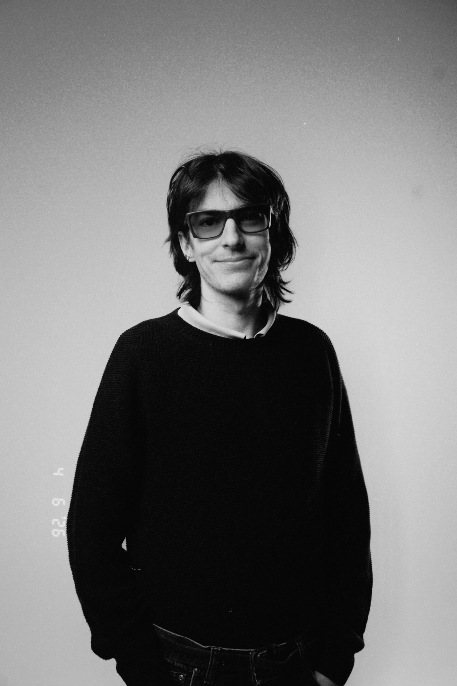

BIO
Reconnu pour ses vidéoclips pour Les Louanges, Karkwa, Lou-Adriane Cassidy, Marie-Pierre Arthur et Luan Larobina (entre autres), les œuvres de CAO ont un langage visuel singulier avec des mises en scènes audacieuses. Depuis 2025, il réalise la série de portraits Les 21 des Francouvertes. Diplômé de l'UQÀM en cinéma (2019), CAO a réalisé Be Yourself, son premier court-métrage présenté aux RVCQ et Le temps d’un spleen (2022), sélectionné au festival Mecal à Barcelone. CAO est aussi auteur-compositeur-interprète dans le groupe Blesse et batteur (ayant accompagné Thierry Larose, Le Roy, la Rose et le Lou(p)). Il a participé à des albums nommés au Prix Polaris et à des tournées majeures (dont les Francos de Montréal, FME, Printemps de Bourges et Francofolies de La Rochelle). CAO est un artiste multidisciplinaire unique au charisme certain.
Recognized for his music videos for Les Louanges, Karkwa, Lou-Adriane Cassidy, Marie-Pierre Arthur, and Luan Larobina (among others), CAO’s works feature a singular visual language with bold staging. Since 2025, he has directed Les 21, a series of portrait videos for Les Francouvertes. A 2019 cinema graduate from UQÀM, CAO directed Be Yourself, his first short film presented at the RVCQ, and Le temps d’un spleen (2022), selected at the Mecal Festival in Barcelona. CAO is also a singer-songwriter in the band blesse and a drummer (having backed Thierry Larose and Le Roy, la Rose et le Lou(p)). He has contributed to Polaris Music Prize–nominated albums and played major tours (including Les Francos de Montréal, FME, Printemps de Bourges, and Les Francofolies de La Rochelle). CAO is a unique, multidisciplinary artist with undeniable charisma.
Contact
charlesantoine.olivier@gmail.com
« On sait tous déjà c'est quoi un bon vin ; ce n'est pas pour autant qu'on se tanne d'y goûter » - CAO
« We all already know what a good wine is; that doesn't mean we ever get tired of tasting it.» - CAO
